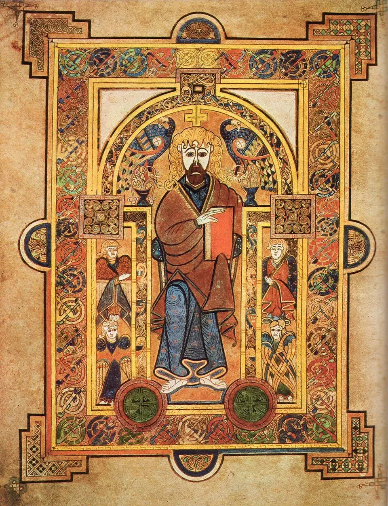
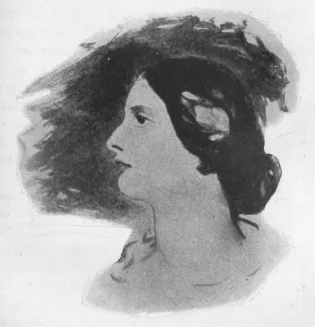
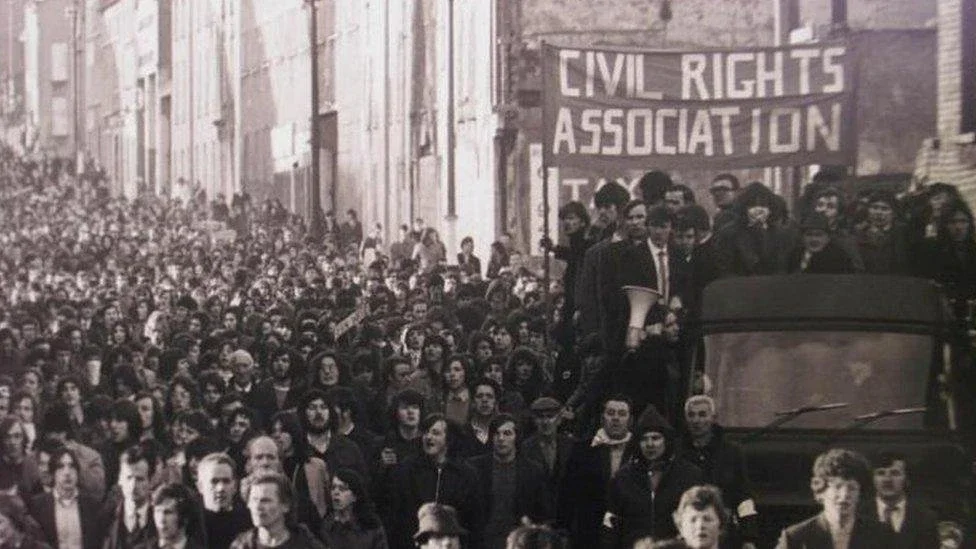

중세란 무엇인가?
중세란 무엇인가?
관심 있는 분들 사이에 이 주제를 던져 놓으면, 죽을 때까지 서로 싸우게 할 수 있을 것입니다.
다만 저는 주로 켈트 문화권의 신화와 역사를 다루는 편이므로, 여기서는 아일랜드 기준으로 설명해 보려고 합니다.
※ 면책조항: 일반적인 학계 합의와 제 주관이 섞여 있습니다.
확실한 건, 많은 독자님이 생각하는 것보다 중세가 빨리 끝난다는 겁니다.
고대 — ~ ca. 450
아일랜드의 정체성을 확립한 대사건, 바로 기독교 도래를 기준으로 나눕니다.
성자 파라그Pádraig 혹은 파트리치오의 선교로 아일랜드가 기독교화하는 5세기경까지를 고대로 볼 수 있을 것 같습니다.
전기 중세 — ~ 1169
게일 문명의 전성기, 아일랜드 신화 문헌에서 주로 그리는 시대입니다.
물론 신화에서는 “수천 년 전”이라고 말하지만, 실상은 신화 저술 당시의 생활상을 반영하죠.
마치 우리가 로판을 쓰면 죽을 때까지 일하는 유교적 귀족이 나오듯 말입니다(...)

«에린 침략의 서Leabhar Gabhála na hÉireann», «켈스의 서Leabhar Cheanannais» 같은 주옥같은 보물이 나온 이 시대는 1169년을 기점으로 끝납니다.
후기 중세 — 1169 - 1534
1169년 이웃한 브리튼 섬의 노르만인이 아일랜드에 상륙합니다.
라인Laighin의 군주 디아르마드 막 무르하Diarmaid Mac Murchadha가 빼앗긴 왕위를 되찾기 위하여 외세를 끌어들인 것입니다.
근대의 민족주의 관점을 대입해서 디아르마드를 매국노로 볼 필요는 없습니다.
당대 아일랜드에 있던 수백 개의 소국들은 서로 통합하지 못하고 무한경쟁과 견제를 거듭했던 사이이고, 터놓고 말해 이방인보다 딱히 낫지 못한 사이인 경우도 허다했으니까요.
이 무렵부터 더블린 일대를 이민족이 완전히 장악하고, 게일 토착 소왕들과 잉글랜드 귀족들의 교류(무력 교류 포함)가 팽팽하게 이어집니다.
전기 근대 aka 근세 — 1534 - ca. 1800
잉글랜드는 아일랜드를 현지 유력 가문에 위탁하는 방식으로 통제해 왔습니다.
그런데 잉글랜드 왕실에 충성하며 그 역할을 맡던 킬데어 백작 토마스 막 갸랄트Tomás Mac Gearailt의 아버지를, 아내를 6명이나 갈아치운 것으로 유명한 헨리 8세가 잡아다가 런던 탑에 가두어 버렸지요.
1534년 토마스는 아버지가 처형당했다는 소식을 듣고 반란을 일으켰으나 무자비하게 진압당하고, 이를 계기로 헨리 8세는 아일랜드 직할 통치를 시작합니다1.
전기 근대는 아일랜드에서 기존 게일 사회질서가 완전히 붕괴한 시대입니다.
시를 짓던 음유시인, 명예로운 귀족들이 하루 한 끼도 못 먹는 빈농으로 몰락했습니다. 원래 가난하던 평민들이야 말할 것도 없지요.
잉글랜드에서는 성군으로 유명하고 아일랜드에서는 살인귀로 악명 높은 엘리자베스 1세, 아일랜드인이 가장 증오하는 학살자 올리버 크롬웰 등이 온 아일랜드를 피로 물들이고 철저히 파괴한 시기이기도 했습니다.
후기 근대 — ca. 1800 - 1922
1800년, 잉글랜드는 명목상의 아일랜드 자치권을 아예 박탈해 버리고 대브리튼-아일랜드 연합 왕국으로 합병해 버립니다.
산업혁명기 잉글랜드는 자국인을 먹여살릴 값싼 식량 공급처를 원했고, 아일랜드가 그 대상으로 낙점되어 집중 육성 (및 수탈) 되었습니다.
그 잔혹하고 철저한 수탈은 1840-50년대의 아일랜드 대기근으로 이어집니다2.
아일랜드 인구 세 명 중에 한 명이 증발해 버리는 대사건으로 토착 게일인의 언어인 게일어가 거의 씨가 마르고 말았지요.

그러나 이 시기는 온 유럽에 민족주의의 열풍이 불던 때였습니다. 아일랜드의 뜻 있는 사람들도 민족 의식을 불태우며 전통 문화와 의식과 설화, 사라져 가는 언어를 채록하고 게일어 문학을 지었죠.
아일랜드 최악의 암흑기였지만 역설적으로 풍부한 아일랜드 문헌과 학술 연구가 태어난 시기입니다.
현대 — 1922 -
마침내 오랜 압제에 시달리던 아일랜드는 끈질긴 투쟁과 정치적 이해가 맞물려 영국의 손아귀에서 독립합니다.
그러나 영국계의 세력이 강하던 북부 아일랜드의 6개 현은 그대로 영국령으로 남았습니다.

북아일랜드 문제는 1922년 당시부터 2026년 지금까지도 폭력과 유혈을 부르는 극도로 민감한 문제이므로, 여기서는 논의를 자제하겠습니다.
다만 IRA로 상징되는 유혈 충돌과 피의 연쇄는 1998년 성금요일 협정으로 “북아일랜드의 미래는 북아일랜드인이 정한다”고 못박아 어느 정도 정리되었다는 사실만을 간단히 언급하고자 합니다.